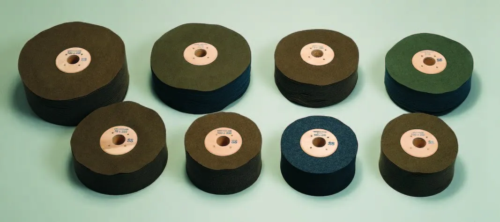
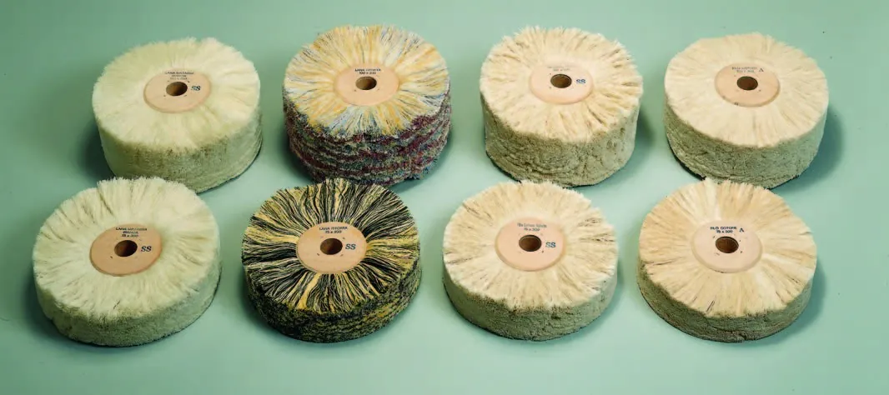
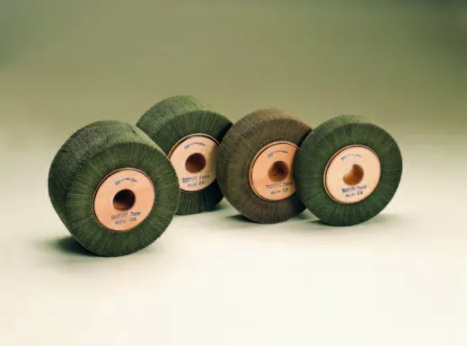
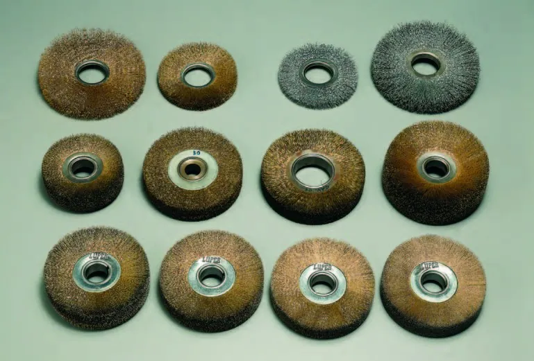
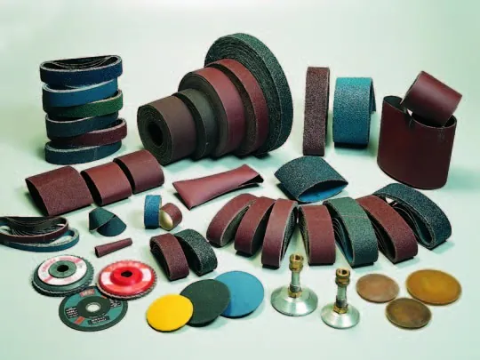
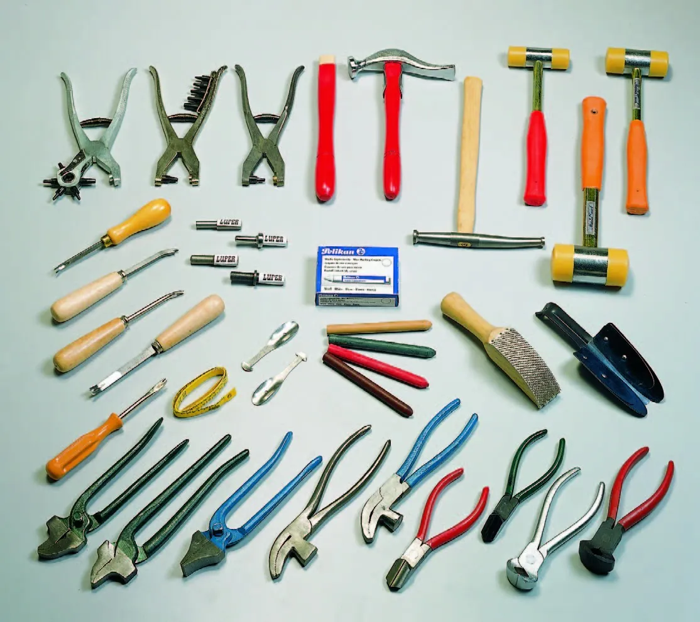
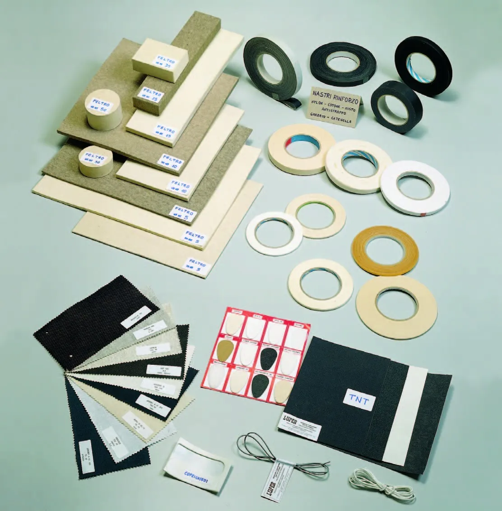
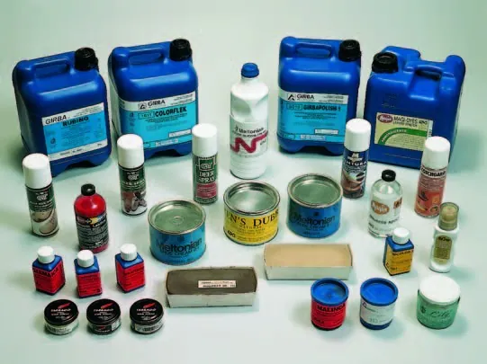
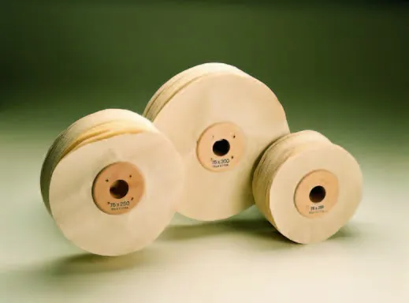

Spazzole
- Tela
- Panno militare
- Lana
- Cotone
- Crine
Per abrasivare e lucidare suole, tacchi e tomaie con cere abrasive, carnaube, creme e appretti.
Vedi le schedeProduzione a Vigevano e forniture complete per calzaturifici e pelletterie.

Dal 1973
Spazzolificio con sede e stabilimento a Vigevano.
Produzione
Spazzole, tamponi e ruote per la lavorazione e il finissaggio delle calzature.
Vendita
Accessori, attrezzi, componenti e prodotti chimici per calzaturifici e pelletterie.
Spazzole, tamponi e ruote per abrasivare, smerigliare e lucidare suole, tacchi e tomaie.

Per abrasivare e lucidare suole, tacchi e tomaie con cere abrasive, carnaube, creme e appretti.
Vedi le schede
Per lisciare tacchi in cuoio e ravvivare suole e pellami scamosciati.
Vedi le schede
Ruote e smerigliatori per calzature, suole e tacchi, con abrasivi flessibili da P24 a P400.
Vedi le schedeAccanto alla produzione, il magazzino: accessori, attrezzi, componenti e prodotti chimici per la calzatura e la pelletteria.




Spazzole e prodotti per la calzatura e la pelletteria: forniture per queste lavorazioni.

Con sede e stabilimento a Vigevano, produciamo spazzole e accessori per la lavorazione e il finissaggio delle calzature.
Nella produzione delle spazzole usiamo materiali di prima scelta. La lavorazione è artigianale, eseguita con cura ed esperienza.
Accanto alla produzione c'è il magazzino: accessori, attrezzi, componenti e prodotti chimici, per forniture complete a calzaturifici, suolifici e pelletterie.
Per articoli, misure e disponibilità.
La mappa di Google si carica solo se la apri.